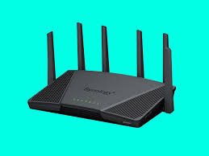
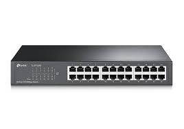
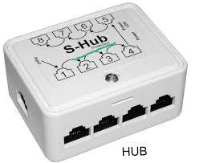
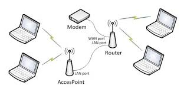
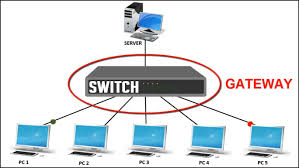
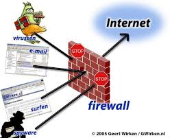

-
X
- Berfungsi mengarahkan paket data antar jaringan yang berbeda, seperti menghubungkan jaringan lokal (LAN) dengan jaringan luas (WAN) atau internet.
- Router Statis: Menggunakan tabel routing tetap yang diatur secara manual.
- Router Dinamis: Menggunakan protokol routing dinamis untuk menyesuaikan jalur data secara otomatis.
- Berfungsi menghubungkan perangkat dalam jaringan lokal (LAN) dan memfasilitasi komunikasi data secara efisien dengan menggunakan metode switching.
- Switch Managed: Dapat dikonfigurasi dan diatur untuk memberikan kontrol lebih terhadap jaringan.
- Switch Unmanaged: Tidak dapat dikonfigurasi dan bekerja secara otomatis.
- Berfungsi menghubungkan beberapa perangkat dalam satu jaringan dan meneruskan data ke semua perangkat yang terhubung, meskipun tidak seefisien switch.
- Hub Aktif: Menguatkan sinyal sebelum meneruskannya ke perangkat lain.
- Hub Pasif: Meneruskan sinyal tanpa penguatan.
- Berfungsi menghubungkan dua jaringan lokal (LAN) untuk membentuk satu jaringan yang lebih besar dan mengatur lalu lintas data di antara kedua jaringan tersebut.
- Bridge Lokal: Menghubungkan segmen-segmen dalam satu jaringan lokal.
- Bridge Remote: Menghubungkan segmen-segmen jaringan yang terletak di lokasi yang berbeda.
- Berfungsi mengubah sinyal digital menjadi sinyal analog (dan sebaliknya) untuk memungkinkan komunikasi data melalui saluran telepon atau kabel.
- Modem Dial-Up: Menggunakan saluran telepon untuk akses internet.
- Modem Kabel: Menggunakan jaringan kabel untuk akses internet.
- Berfungsi menyediakan koneksi nirkabel bagi perangkat di jaringan, memungkinkan mereka terhubung ke jaringan kabel yang lebih besar.
- Access Point Standalone: Berdiri sendiri dan tidak memerlukan pengendalian terpusat.
- Access Point Controller-Based: Dikendalikan oleh perangkat pengendali pusat.
- Berfungsi sebagai "pintu gerbang" yang menghubungkan dua jaringan yang berbeda dan menerjemahkan protokol komunikasi yang berbeda.
- Gateway Jaringan: Menghubungkan dua jaringan yang berbeda.
- Gateway Protokol: Menghubungkan jaringan dengan protokol komunikasi yang berbeda.
- Berfungsi melindungi jaringan dari akses yang tidak sah dan serangan dengan memantau dan mengontrol lalu lintas data yang masuk dan keluar.
- Firewall Perangkat Keras: Berdiri sendiri sebagai perangkat fisik.
- Firewall Perangkat Lunak: Diinstal pada komputer atau server untuk melindungi perangkat tersebut.
MATERI
Perangkat Perantara
Perangkat perantara dalam jaringan komputer adalah perangkat yang digunakan untuk menghubungkan, mengelola, dan mengontrol aliran data antara perangkat yang berbeda dalam sebuah jaringan. Perangkat ini berperan penting dalam memastikan komunikasi yang efisien, aman, dan andal di antara perangkat yang terhubung dalam jaringan.
Router
- Jenis-jenisnya:
Switch
- Jenis-jenisnya:
Hub
- Jenis-jenisnya:
Bridge

- Jenis-jenisnya:
Modem
- Jenis-jenisnya:
Access Point
- Jenis-jenisnya:
Gateway
- Jenis-jenisnya:
Firewall
- Jenis-jenisnya: